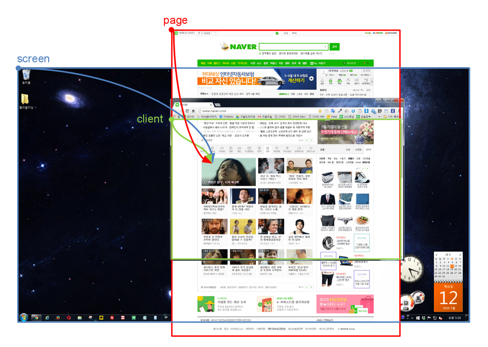

# jQuery Event <div id="copyright"></div>
## `.on(이벤트, 핸들러)` Returns: `jQuery` 대상에 이벤트를 연결,<br> 대상에 이벤트가 발생하면 핸들러를 실행 > '핸들러(Handler)'란 이벤트가 발생한 후 실행시킬 콜백 함수를 말합니다.
```html <div class="btn">CLICK</div> ``` ```js $('.btn').on('click', function () { console.log('click~!'); }); ```
```css body { height: 4000px; } ``` ```js $(document).on('scroll', function () { console.log( $(this).scrollTop() ); }); ```
```js $(선택자).on(이벤트, 핸들러); $(선택자).on(이벤트, 핸들러); ``` ```js $(선택자) .on(이벤트, 핸들러) .on(이벤트, 핸들러); ``` ```js $(선택자).on({ 이벤트: 핸들러, 이벤트: 핸들러 }); ``` > 하나의 대상에 여러 이벤트가 연결될 때, 객체 데이터를 사용하면 편리합니다.
```js $('.box').on('mouseenter', function () { console.log('Enter'); }); $('.box').on('mouseleave', function () { console.log('Leave'); }); ``` ```js $('.box') .on('mouseenter', function () { console.log('Enter'); }) .on('mouseleave', function () { console.log('Leave'); }); ``` ```js $('.box').on({ mouseenter: function () { console.log('Enter'); }, mouseleave: function () { console.log('Leave'); } }); ```
## jQuery 이벤트 종류
### Mouse 이벤트 | 종류 | 의미 | |---|---| | `click` | (좌)클릭 | | `dblclick` | 더블클릭 | | `contextmenu` | 우클릭 | | `mousedown` | 마우스 (좌)버튼를 누를 때 | | `mouseup` | 마우스 (좌)버튼에서 손을 뗄 때 | | `mouseenter` | 마우스 포인터가 요소로 들어갈 때 | | `mouseleave` | 마우스 포인터가 요소에서 나올 때 | | `mouseover` | 마우스 포인터가 요소로 들어갈 때 (이벤트 버블링) | | `mouseout` | 마우스 포인터가 요소에서 나올 때 (이벤트 버블링) | | `mousemove` | 마우스 포인터가 움직일 때 | | `mousewheel` | 마우스 휠을 사용할 때 |
### Keyboard 이벤트 | 종류 | 의미 | |---|---| | `keydown` | 키를 누를 때 | | `keyup` | 키에서 손을 뗄 때 | | `keypress` | 키를 눌러 글자가 입력될 때 |
### View 이벤트 | 종류 | 의미 | |---|---| | `resize` | 윈도우의 크기가 변경될 때 | | `scroll` | 스크롤될 때 |
### Progress 이벤트 | 종류 | 의미 | |---|---| | `ready` | 문서 객체(document)가 준비 되었을 때 | | `load` | 윈도우가 로드 되었을 때 |
### Form 이벤트 | 종류 | 의미 | |---|---| | `change` | 양식의 내용이 변경되었을 때 | | `focus` | 양식에 포커스 되었을 때 | | `blur` | 양식에서 블러 되었을 때 | | `focusin` | 양식에 포커스 되었을 때 (이벤트 버블링) | | `focusout` | 양식에서 블러 되었을 때 (이벤트 버블링) | | `select` | 양식의 내용을 선택(드래그)할 때 | | `submit` | 양식이 전송될 |
## `ready`와 `load`
### `$(document).on('ready', function () {})` 문서 객체(document)가 준비(생성) 되었을 때
```html <!doctype HTML> <html> <head> <script> console.log( $('.box').length ); // 0 </script> </head> <body> <div class="box"></div> </body> </html> ``` > `<script>`가 실행되는 시점은 `<body>`가 읽히기 전이기 때문에<br> `.box`의 개수를 파악할 수 없습니다.
```html <!doctype HTML> <html> <head> <script> $(document).on('ready', function () { console.log( $('.box').length ); // 1 }); </script> </head> <body> <div class="box"></div> </body> </html> ```
```html <!doctype HTML> <html> <head> <script> $(function () { console.log( $('.box').length ); // 1 }); </script> </head> <body> <div class="box"></div> </body> </html> ``` > `document).on('ready', `를 생략할 수 있습니다.
```html <!doctype HTML> <html> <head></head> <body> <div class="box"></div> <script> console.log( $('.box').length ); // 1 </script> </body> </html> ``` > 이전과 같은 원리로 `<script>`를 `<body>` 하단으로 이동시킬 수 있습니다.
### `$(window).on('load', function () {})` 윈도우 객체(window)가 모두 로드 되었을 때
### 브라우저가 HTML을 읽는 순서 1. 페이지 방문 1. HTML 호출 1. DOM 생성 (`ready`) 1. 페이지 로드 완료 (`load`)
## `.off('이벤트')` Returns: `jQuery` 대상에 연결된 이벤트를 제거
```js $('.box').on('click', function () { console.log('Click!'); $(this).off('click'); }); ```
## `.one('이벤트')` Returns: `jQuery` 대상에 이벤트를 한 번만 연결
```js $('.box').on('click', function () { console.log('Click!'); $(this).off('click'); }); ``` ```js $('.box').one('click', function () { console.log('Click!'); }); ```
## Event 객체 대상에서 연결된 이벤트가 발생했을 때,<br> 그 이벤트에 대한 정보를 가지는 객체
```js $('a').on('click', function (event) { event.preventDefault(); }); ``` ```js $('a').on('click', function (e) { e.preventDefault(); }); ```
### Event 객체의 속성(Properties) | 속성 | 의미 | 반환값 | |---|---|---| | `e.pageX` | 이벤트가 발생한 지점의 X 좌표 | `Number` | | `e.pageY` | 이벤트가 발생한 지점의 Y 좌표 | `Number` | | `e.clientX` | 이벤트가 발생한 지점의 X 좌표 | `Number` | | `e.clientY` | 이벤트가 발생한 지점의 Y 좌표 | `Number` | | `e.screenX` | 이벤트가 발생한 지점의 X 좌표 | `Number` | | `e.screenY` | 이벤트가 발생한 지점의 Y 좌표 | `Number` | | `e.target` | 이벤트가 발생한 요소 | `Element` | | `e.which` | 이벤트가 발생한 'keyCode' | `Number` | | `e.type` | 발생한 이벤트의 이름 | `String` |
### Event 객체의 메소드(Methods) | 속성 | 의미 | 반환값 | |---|---|---| | `e.preventDefault()` | 이벤트가 발생한 요소의 **기본 이벤트 차단** | `undefined` | | `e.stopPropagation()` | 이벤트가 발생한 요소의 **이벤트 버블링과 캡처링 차단** | `-` |
#### `page`, `client`, `screen` 좌표의 차이 
## Event 버블링(Bubbling) 이벤트가 자식 요소에서 조상(부모) 요소로 전파되는 현상
부모 요소와 자식 요소 생성 ```html <div class="parent"> <div class="child"></div> </div> ``` ```css .parent { width: 200px; height: 200px; background: green; } .child { width: 100px; height: 100px; background: red; } ``` > 위 예제는 이후 페이지 예제들의 구조 입니다.
부모 요소와 자식 요소에 이벤트 연결 ```js $('.parent').on('click', function () { console.log('parent click!'); }); $('.child').on('click', function () { console.log('child click!'); }); ``` > `.child`를 클릭하면 `.parent`도 같이 클릭됩니다.<br>이러한 현상을 '이벤트 버블링'이라고 합니다.
이벤트 버블링 차단 ```js $('.parent').on('click', function () { console.log('parent click!'); }); $('.child').on('click', function (event) { event.stopPropagation(); console.log('child click!'); }); ``` > `event.stopPropagation()`를 적용해 '이벤트 버블링'을 차단했습니다.<br>`.child`를 클릭해도 더 이상 `.parent`는 클릭되지 않습니다.<br>이후 나오는 **'이벤트 캡처링'**도 같은 방식으로 차단합니다.
부모 요소와 자식 요소에 이벤트 연결 (이벤트 버블링이 발생하는 `mouseover` 이벤트 연결) ```js $('.parent').on('mouseover', function () { console.log('parent over!'); }); ``` > `.child`에 마우스 포인터가 들어가거나 나올 때도 이벤트가 발생합니다.
이벤트 버블링 차단 ```js $('.parent').on('mouseover', function () { console.log('parent over!'); }); $('.child').on('mouseover', function (event) { event.stopPropagation(); }); ``` > `.child`에 `event.stopPropagation()`를 적용해 '이벤트 버블링'을 차단했습니다.
부모 요소와 자식 요소에 이벤트 연결 (이벤트 버블링이 발생하지 않는 `mouseenter` 이벤트 연결) ```js $('.parent').on('mouseenter', function () { console.log('parent enter!'); }); ``` > 이벤트 버블링은 차단한 `mouseover`와는 조금 다르지만,<br>더 이상 이벤트 버블링은 발생하지 않습니다.
## Event 캡처링(Capturing) 이벤트가 조상(부모) 요소에서 자식 요소로 전파되는 현상 > '이벤트 버블링'의 반대 개념입니다.<br> 거의 사용되지 않는 방식으로 개념 정도만 이해하시면 충분합니다.
부모 요소와 자식 요소 생성 ```html <div class="parent"> <div class="child"></div> </div> ``` ```css .parent { width: 200px; height: 200px; background: green; } .child { width: 100px; height: 100px; background: red; } ``` > 위 예제는 이후 페이지 예제들의 구조 입니다.
이벤트 캡처링 **사용** ```js var div = document.querySelectorAll('div'); for (var i = 0; i < div.length; i++) { div[i].addEventListener('click', function (e) { console.log(e.currentTarget.className); }, true); } // 'parent' // 'child' ``` > `'parent'`가 콘솔에 먼저 기록됩니다.
이벤트 캡처링 사용하지 않음 ```js var div = document.querySelectorAll('div'); for (var i = 0; i < div.length; i++) { div[i].addEventListener('click', function (e) { console.log(e.currentTarget.className); }, false); } // 'child' // 'parent' ``` > `'child'`가 콘솔에 먼저 기록됩니다.